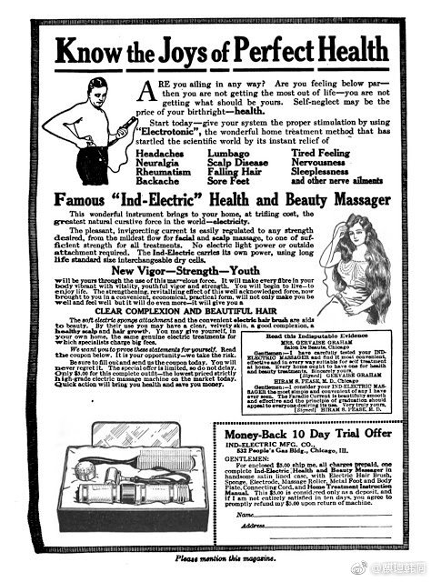
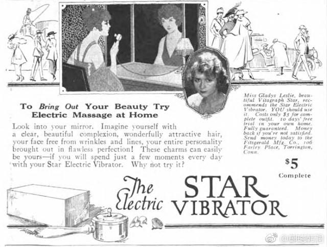
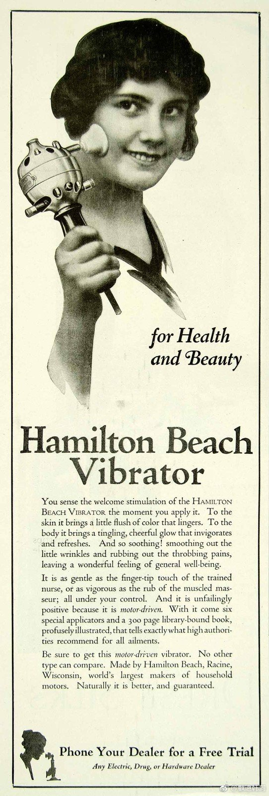

@麒璁:
振动棒（vibrator）是一种为无数女性和男性带来福音的伟大发明，但我们可能并不知道这一发明已经有上百年的历史了，是一个与人类现代化浪潮关系密切的伟大发明。今天振动棒的主要功能是为了释放女性性欲，但是在一百多年前的西方人们却认为女性不存在性欲，而性欲这一人类基础欲望仅存在于男性之中。女性的性欲表达被认为是“歇斯底里”（hysteria），指的是不可控制的情感释放。这一词来自于古希腊语中的“子宫”（hystera/ὑστέρα），因为在19世纪之前的两千多年中，人们普遍认为女性的子宫会在身体各处游走，而“歇斯底里”就是因为子宫游走倒置而引起的。
女性的性欲即是被这样认为是一种病态症状。解决性欲的烦恼，最快捷的办法之一就是手淫（masturbation），但是很遗憾在西方基督教文化中，手淫是一种极大地罪过，也对身体有害。维多利亚（Victoria）时期出现过许多防止青年男性手淫的“保护罩”，看起来就让人感觉恐怖。
在当时，女性解决“歇斯底里”的方式之一就是找医生进行“骨盆按摩”（pelvic massage）。这种妇科治疗方式最早的记录是在19世纪，其历史可能更加悠久，而《纽约医学期刊》（New York Medical Journal）记录了瑞典治疗师布兰特（Thure Brandt，1819-1895）通过用手对妇女进行骨盆按摩达到治疗目的。长久以来骨盆按摩是缓解女性“歇斯底里”症状的主要医学方式，而医生不辞辛劳地用手对女性进行骨盆按摩也非常的辛苦。医生进行骨盆按摩是一件严肃的事情，进行过程之中需要看着患者的眼睛保持严肃尊重，治疗的时长也因每个患者的情况不同而有区别，有的可长达一个小时。一位医生一天要治疗大量患者，非常辛苦。因此，在工业革命（Industrial Revolution）时代，通过机器代替人手的治疗工具应运而生。
最早的机械“歇斯底里”治疗器出现在第一次工业革命之前，是一种手摇式振动器，可谓是现代振动棒的直系源头。不过手摇仍然需要人力，因此到了第一次工业革命时由蒸汽驱动的振动器出现了。但是蒸汽设备毕竟非常笨重庞大，需要不停地加煤以驱动设备的运转，因此非常不方便。而随着第二次工业革命将人类引领如“电气时代”，第一根电动振动棒也随之出现。
电动振动棒的发明者事实上存在争议，最早的记录之一在1878年，并显示其由法国医生维古鲁克斯（Romain Vigouroux，1831-1911）发明，但是一般认为现代振动棒的发明者是维多利亚时期的英国医生莫蒂默·格朗维尔（Joseph Mortimer Granville，1833-1900）。格朗维尔在自己的著作《神经-振动和刺激作为功能障碍和器质性疾病治疗药剂》（Nerve-Vibration and Excitation as Agents in the Treatment of Functional Disorder and Organic Disease，1883）中描述了他的振动器的用途，包括缓解疼痛和治疗神经痛、神经衰弱、病态烦躁、消化不良和便秘。早期的振动器在医学界广受欢迎，被用于治疗女性和男性的各种疾病，包括歇斯底里、关节炎、便秘、闭经、炎症和肿瘤；一些在一战中受伤的士兵也接受了振动疗法作为治疗。当然，振动棒最初的主要功能，还是治疗女性的“歇斯底里”。
如此多功能的振动器一下子就火热了起来，在20世纪初到处都是关于振动棒的广告，其多功能妙用深得大家喜爱。但是这些广告很快就在20世纪20年代消失，原因在于振动棒逐渐地和性玩具联系在了一起，广告中也出现了色情内容。而随着医学的进步，人们意识到原来女性也是有性欲的，于是能作为性玩具的振动棒自然不能被主流社会接受。20世纪20年代之后的西方社会发生了很多事情，关于女性性欲的认知与承认，或者说对于人本身的生理欲望的正视，经历了一系列的发展。这里面有阿尔弗雷德·金赛（Alfred C.Kinsey，1894-1956）这样的学者的贡献，也有更加庞大的女性主义运动和各类社会运动的贡献。
可以说，振动棒的发明史与人类对于女性性欲态度的转变，反映是人类文明现代化的体现。今天女性性欲能够被人们承认和正视，“性”不再被被视为一个难以启齿的问题，振动棒也能够被人们谈及和作为商品销售，是一个巨大的社会跨越。当然，现代化的步伐在各个地区并不是一致的，在很多地方还需要我们努力。
配图是20世纪初各种振动器广告。 英国·University of Warwick
英国·University of Warwick
女性的性欲即是被这样认为是一种病态症状。解决性欲的烦恼，最快捷的办法之一就是手淫（masturbation），但是很遗憾在西方基督教文化中，手淫是一种极大地罪过，也对身体有害。维多利亚（Victoria）时期出现过许多防止青年男性手淫的“保护罩”，看起来就让人感觉恐怖。
在当时，女性解决“歇斯底里”的方式之一就是找医生进行“骨盆按摩”（pelvic massage）。这种妇科治疗方式最早的记录是在19世纪，其历史可能更加悠久，而《纽约医学期刊》（New York Medical Journal）记录了瑞典治疗师布兰特（Thure Brandt，1819-1895）通过用手对妇女进行骨盆按摩达到治疗目的。长久以来骨盆按摩是缓解女性“歇斯底里”症状的主要医学方式，而医生不辞辛劳地用手对女性进行骨盆按摩也非常的辛苦。医生进行骨盆按摩是一件严肃的事情，进行过程之中需要看着患者的眼睛保持严肃尊重，治疗的时长也因每个患者的情况不同而有区别，有的可长达一个小时。一位医生一天要治疗大量患者，非常辛苦。因此，在工业革命（Industrial Revolution）时代，通过机器代替人手的治疗工具应运而生。
最早的机械“歇斯底里”治疗器出现在第一次工业革命之前，是一种手摇式振动器，可谓是现代振动棒的直系源头。不过手摇仍然需要人力，因此到了第一次工业革命时由蒸汽驱动的振动器出现了。但是蒸汽设备毕竟非常笨重庞大，需要不停地加煤以驱动设备的运转，因此非常不方便。而随着第二次工业革命将人类引领如“电气时代”，第一根电动振动棒也随之出现。
电动振动棒的发明者事实上存在争议，最早的记录之一在1878年，并显示其由法国医生维古鲁克斯（Romain Vigouroux，1831-1911）发明，但是一般认为现代振动棒的发明者是维多利亚时期的英国医生莫蒂默·格朗维尔（Joseph Mortimer Granville，1833-1900）。格朗维尔在自己的著作《神经-振动和刺激作为功能障碍和器质性疾病治疗药剂》（Nerve-Vibration and Excitation as Agents in the Treatment of Functional Disorder and Organic Disease，1883）中描述了他的振动器的用途，包括缓解疼痛和治疗神经痛、神经衰弱、病态烦躁、消化不良和便秘。早期的振动器在医学界广受欢迎，被用于治疗女性和男性的各种疾病，包括歇斯底里、关节炎、便秘、闭经、炎症和肿瘤；一些在一战中受伤的士兵也接受了振动疗法作为治疗。当然，振动棒最初的主要功能，还是治疗女性的“歇斯底里”。
如此多功能的振动器一下子就火热了起来，在20世纪初到处都是关于振动棒的广告，其多功能妙用深得大家喜爱。但是这些广告很快就在20世纪20年代消失，原因在于振动棒逐渐地和性玩具联系在了一起，广告中也出现了色情内容。而随着医学的进步，人们意识到原来女性也是有性欲的，于是能作为性玩具的振动棒自然不能被主流社会接受。20世纪20年代之后的西方社会发生了很多事情，关于女性性欲的认知与承认，或者说对于人本身的生理欲望的正视，经历了一系列的发展。这里面有阿尔弗雷德·金赛（Alfred C.Kinsey，1894-1956）这样的学者的贡献，也有更加庞大的女性主义运动和各类社会运动的贡献。
可以说，振动棒的发明史与人类对于女性性欲态度的转变，反映是人类文明现代化的体现。今天女性性欲能够被人们承认和正视，“性”不再被被视为一个难以启齿的问题，振动棒也能够被人们谈及和作为商品销售，是一个巨大的社会跨越。当然，现代化的步伐在各个地区并不是一致的，在很多地方还需要我们努力。
配图是20世纪初各种振动器广告。

- 

- 

- 